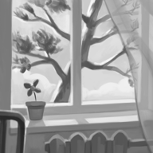

Один день лета
Пётр Косых
Играть онлайн
Ты открываешь глаза и видишь белые клубы облаков. А под облаками -- ствол высокой сосны, уходящий прямиком в небо. Некоторое время ты смотришь на неровную кору, длинные иголки, большие шишки и вспоминаешь...
Лето. Ты живёшь у бабушки и дедушки в одноэтажном доме. Прямо напротив окна спальни растёт сосна, которую ты видишь каждое утро, когда просыпаешься в своей кровати.